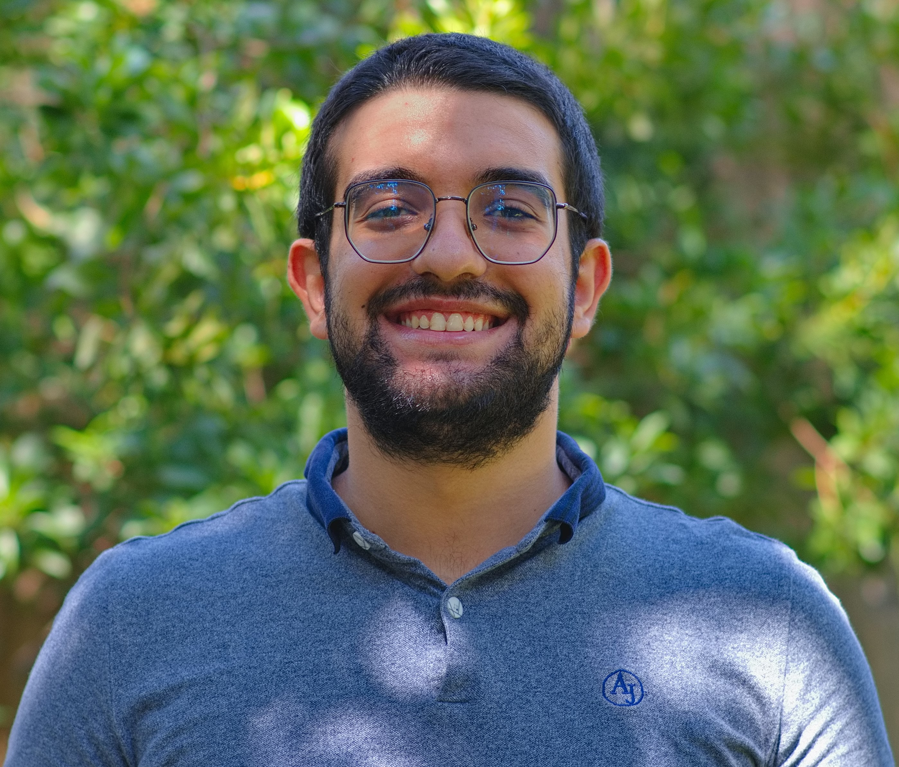

Keynote Speaker
Dr. Ojas Parekh
Sandia National Laboratories · Talk Title TBA
Abstract: Ojas will discuss an interesting problem in applied mathematics.
SWAM Speakers
The students across the southwest...
Blake Bates
University of Arizona · Topological Signal Processing: an Alternative Perspective
Abstract:
Topological data analysis offers a different way to study time series by focusing on
the geometry produced by a signal rather than only its behavior in the time or
frequency domain. A common approach is to construct a sliding window embedding,
which turns a one-dimensional signal into a point cloud whose shape reflects properties
of the underlying dynamics. Methods such as SW1PerS use persistent homology to measure
loop structure in these embeddings and provide a topological description of periodic behavior.
In this talk, I will discuss how the topology of sliding window embeddings can also reflect
classical spectral properties of a signal. For periodic signals, features of the frequency
content influence the geometry of the embedding and, in turn, its persistent homology. These
topological summaries can then be used as inputs to machine learning models to recover spectral
properties of the original signal. This suggests that frequency information is encoded, at
least in part, in the topology of the embedding and raises broader mathematical questions about
exactly what spectral information is preserved and why.
José Garcia
University of New Mexico · Quadratic Composite Operator and its Application to Non-Hermitian Physics
Abstract: In some physics settings, including Quantum Mechanics there is an underlying operator that defines a differential equation modeling a system. For physical reasons, it is assumed to be Hermitian. However, this requirement has been loosened to allow for non-Hermitian operators, or in finite dimension the matrix representation. This is a result of wanting to model a system that can lose information to the environment. To this end we investigate the role of a generalization of the quadratic composite operator construction first introduced by A. Cerjan, T. Lorin, and F. Vides. We will explore how the quadratic composite operator connects with non-Hermitian problems with an emphasis on approximate joint eigenvectors and how they evolve over time.
Heng Wu
University of Arizona · Threshold-Dependent Immune Recognition Shapes Mutation-Frequency Patterns in Tumor Evolution
Abstract: As tumors grow, their cells accumulate mutations, some of which generate altered peptides called neoantigens that can be recognized by the immune system. Immune recognition can suppress cells carrying these mutations, potentially leaving detectable signatures in tumor genetic diversity. One way to search for such signatures is to compare the numbers of neoantigenic and other mutations across cancer cell fraction, the fraction of tumor cells carrying a given mutation. How immune recognition shapes this count ratio remains difficult to predict because mutation, cell growth, and recognition are stochastic, and selection can affect only part of a mutation's descendant population. We investigate a threshold model in which a neoantigen-bearing lineage becomes eligible for immune recognition only after reaching a specified size. Recognition then occurs after a stochastic waiting time and reduces the lineage's net growth rate. Stochastic tumor-evolution simulations reveal an unexpected pattern: the neoantigenic-to-background mutation count ratio can exhibit local enrichment followed by depletion as cancer cell fraction increases, despite selection acting against neoantigen-bearing cells. To explain this pattern, we develop a mutation-centered mean-field approximation that accounts for recognition of the focal neoantigen, selection arising in subsets of its descendants, and mutations born in already selected lineages. We derive integral expressions for expected mutation carrier masses and transform mutation supply from birth time into cancer cell fraction. The resulting count ratio separates, where the maps are one-to-one, into relative mutation supply and a Jacobian factor. This decomposition explains how selection can compress mutations born at different times into a narrow range of final fractions, producing local enrichment. We examine how recognition rate, selection strength, and detection threshold shape this effect. Future comparisons with tumor-sequencing data will test whether these predicted patterns capture signatures of immune selection in human tumors.
Christopher Martin Mount
University of Arizona · Sampling Sticky Brownian Motion and its Local Time
Abstract: We develop exact sampling algorithms for reflected sticky Brownian motion and symmetric sticky Brownian motion, jointly with their local-time coordinates. For reflected sticky Brownian motion, we factor the joint position–local-time transition law into elementary random draws. Each one-step sample requires one Gaussian random variable and, depending on the case, at most one uniform and one exponential random variable. Symmetric sticky Brownian motion is then obtained by adding at most one independent fair Bernoulli sign. Iterating the one-step construction produces exact samples from the joint finite-dimensional distributions along any given increasing sequence of observation times.
Daniela Lezcano Cuello
New Mexico Institute of Mining and Technology · Bistability Dynamics of Leishmaniasis Prevalence
Abstract: In this work, we construct a mathematical model based on a system of differential equations to explain American Cutaneous Leishmaniasis data across different health areas of Panama. We prove that the model exhibits bistable dynamics and, in particular, undergoes a backward bifurcation. We derive the exact parametric conditions responsible for this behavior and provide numerical simulations to support our theoretical analysis.
Raghav Agrawal
University of New Mexico · Adjoint-Based Quantity-of-Interest Error Estimation for Fluid-Structure Interaction Problems
Abstract: A popular numerical technique for solving Partial Differential Equations (PDEs) is the mesh-based Finite Element Method. The domain is partitioned into elements of finite (non-infinitesimal) size, resulting in a "mesh". Sometimes, we want to estimate a certain quantity when we numerically solve PDEs. This "Quantity of Interest" (QoI) can often be expressed as a linear functional of the PDE solution. This formulation naturally lends itself to adjoint-based error analysis, where we solve an adjoint problem to estimate the error in the numerically calculated QoI. It also determines which regions in the domain contribute most to the error. This information allows "adaptive refinement" of the mesh, which reduces the error more efficiently than uniform refinement. In this talk, I'll discuss how adjoint-based error analysis can be applied to Fluid-Structure Interaction Problems.
Sujata Ghimire
University of New Mexico · Micropolar Continuum Modeling of Microstructured Materials: A Finite Element Approach
Abstract:
Materials with an underlying microstructure can exhibit mechanical behavior
that is not fully captured by classical continuum mechanics, particularly when
the characteristic size of the microstructure becomes comparable to the length
scale of the problem. This limitation is especially relevant to biological
materials such as bone, where a complex heterogeneous microstructure can
lead to size-dependent behavior and localized deformation. Micropolar, or
Cosserat, continuum theory offers a way to account for these effects by
introducing independent microrotations, couple stresses, and an intrinsic
material length scale into the continuum description.
This work focuses on developing a finite element framework to study the
static and dynamic behavior of linear micropolar continua. The framework
considers both two- and three-dimensional formulations under static and
dynamic conditions, with the numerical models implemented in MATLAB. In
addition to the usual translational degrees of freedom, independent rotational
degrees of freedom are included to represent the micropolar response. The
numerical formulation is examined through patch tests, benchmark problems,
and comparisons with analytical solutions where available, allowing the
implementation to be checked under different loading conditions and problem
settings.
The dynamic behavior of the micropolar continuum also motivates the study
of wave propagation and dispersion. Dispersion analysis can be used to explore
how microrotation, micropolar material parameters, and the intrinsic length scale
affect the relationship between wave frequency and wavelength. This provides a useful
link between the mathematical description of a micropolar continuum and the physical
influence of the underlying material structure. The overall goal is to develop a
computational framework that can capture size-dependent behavior in microstructured
materials, with particular interest in its future application to bone.
Collin Kilmer
Arizona State University · Effects of Dispersal on Stability and Abundance in a Two-Patch Tribolium Confusum Model
Abstract: The effects of dispersal on a population can be either stabilizing or destabilizing depending on the local dynamics of the coupled populations. We investigate this by extending the continuous-time larvae–adult (cLA) model proposed by Brozak et al., with the pupal delay set to zero, to two identical habitat patches connected by linear, symmetric adult dispersal. We demonstrate that dispersal neither stabilizes nor destabilizes the metapopulation, and does not alter equilibrium abundance; it only affects the rate of decay of population differences between patches. This is demonstrated through theoretical analysis and numerical simulations, and preliminary results from ongoing empirical trials are also supportive. These findings suggest that in Tribolium confusum populations, the demographic consequences of dispersal are transient, not asymptotic.
Farnaz Salehi Kolahi
University of New Mexico · Connecting Cosserat Continuum Mechanics with Timoshenko Beam and Rigid-Body Spring Models for Generalized Lattice Formulations
Abstract:
Lattice models provide a discrete representation of continuum materials
in which the effective mechanical response is governed by both the lattice
geometry and the mechanical behavior of individual members. Depending
on the formulation, these members may be represented by normal, shear,
and rotational springs or by beam elements incorporating axial, bending,
and shear deformation. Although these approaches can reproduce a range of
effective elastic behaviors, properties such as the effective Poisson’s ratio
can be constrained by the selected lattice geometry and member parameters.
Existing studies have introduced additional interactions, cell-level
coupling, or corrective forces to overcome these limitations; however,
these modifications are generally specific to individual lattice formulations.
This motivates the development of a more general framework for describing different
lattice models within a consistent mechanical formulation.
In this work, Cosserat continuum theory is investigated as a basis for developing
such a framework. Unlike classical elasticity, Cosserat theory introduces independent
microrotation in addition to displacement, together with asymmetric force stress,
couple stress, and curvature. These additional quantities provide a continuum description
that can be connected to the mechanics of discrete lattice members. The present study
focuses on establishing this connection with Timoshenko beam theory and rigid-body spring models.
To establish the correspondence with Timoshenko beam theory, the full three-dimensional
linear isotropic Cosserat equations are first formulated and then reduced under one-dimensional
assumptions. The resulting equations contain coupled translational and rotational fields with a
mathematical structure similar to the displacement-rotation equations of Timoshenko beam theory.
The coupled equations are reduced to comparable fourth-order differential equations, and their
coefficients are matched to identify relationships between the parameters of the two theories.
The same approach will be extended to rigid-body spring models by considering their normal, shear,
and rotational interactions.
The resulting relationships provide a foundation for developing lattice models based on a
consistent continuum framework. The next stage of this work will incorporate the identified
parameters into discrete lattice formulations and evaluate their effective mechanical response,
with particular attention to the attainable range of Poisson’s ratio. Overall, this work aims to
connect Cosserat continuum mechanics with beam- and spring-based lattice models and provide a
systematic framework for developing generalized lattice formulations.
Anwar Khaddaj
Arizona State University · A Computational Workflow to Inverse Problems in Electrical Impedance Tomography
Abstract: Electrical impedance tomography (EIT) is a portable, non-invasive, and relatively cheap medical technique for imaging electrical conductivity distributions within the human body. One of its important applications is the detection of intra-abdominal hemorrhage in trauma patients. Traditionally, inverse problems are studied to reconstruct the internal conductivities given voltage measurements on boundary surface electrodes. However, the inverse problem is ill-posed and highly sensitive to breathing and other motion, causing artifacts in reconstructed images. In this talk, we first present an extended parametric partial differential equation (PDE) for EIT accounting for boundary shape and internal conductivities and then apply a collocational approach based on generalized polynomial chaos to construct a polynomial approximation of the forward solution in the parameter space. Having that surrogate polynomial allows us to efficiently solve the inverse problem using Tikhonov and other regularization techniques to reconstruct the internal conductivities as well as the boundary shape.
Bio: Anwar Khaddaj works at the intersection of applied mathematics, translational research and biotech innovation. After earning a Master’s degree in Computational Applied Mathematics from Rice University through thesis research with the Texas Medical Center, he is currently pursuing a PhD in Applied Mathematics at Arizona State University.and is working on inverse problems in medical imaging with Dr. Malena Espanol and Dr. Rosalind Sadleir. Along with his PhD, he is also the co-managing director of Nucleate Arizona, a chapter of a global nonprofit organization that empowers students to turn their biotech research into startups through democratizing access to education, investors, and professionals in local and global ecosystems.
